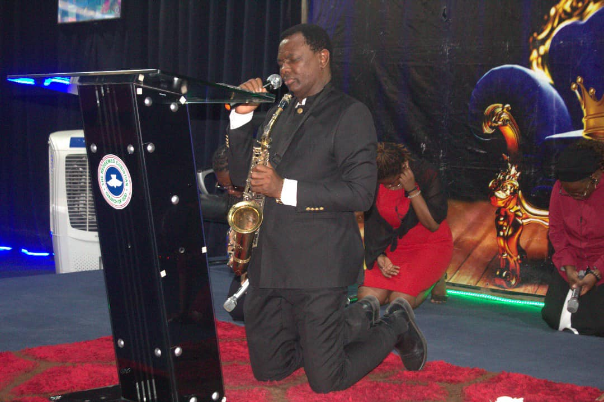

Pastor
Dr
Patrick D. Osagie
Pastor, Musician, Youth Advocate, Academician.
Patrick D. Osagie
Pastor Patrick D. Osagie serves under the RCCG Power Assembly Mega Church and is deeply passionate about youth ministry as the Continental Youth Pastor. Beyond his pastoral duties, he is a talented saxophonist and musician, sharing his gift of worship with congregations and audiences alike.
He is also a devoted family man, committed to faith, family, and community. Pastor Patrick regularly hosts prayer sessions on his Facebook page and leads inspirational discussions through his radio podcast on HOTFM.
As the Continental Youth Pastor, Pastor Patrick empowers young people across the continent through mentorship, conferences, and spiritual guidance.
Join regular online prayer sessions on Pastor Patrick's Facebook page for spiritual renewal and community fellowship.
Join PrayerTune in to inspiring talks, teachings, and interviews on Pastor Patrick’s weekly radio podcast on HOTFM.
Listen Now
As the Continental Youth Pastor, Pastor Patrick D. Osagie inspires, mentors, and empowers youth across Africa. He organizes impactful programs, conferences, and mentorship sessions to build a generation of faith-driven leaders.

Engaging conferences to equip youth with spiritual and leadership skills.

One-on-one mentorship for guidance, career, and spiritual growth.

Weekly youth gatherings to foster community and spiritual development.